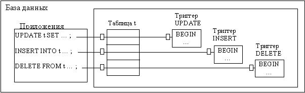

Триггеры объектов
ORACLE позволяет определять процедуры, которые неявно выполняются, когда для ассоциированной таблицы выдается предложение INSERT, UPDATE или DELETE. Такие процедуры называются триггерами базы данных.
Триггеры аналогичны хранимым процедурам. Триггер может состоять из предложений SQL и PL/SQL, исполняемым как единица, и может вызывать другие хранимые процедуры. Однако процедуры и триггеры различаются по способу их вызова. В то время как процедура явно вызывается пользователем или приложением, триггер неявно ВОЗБУЖДАЕТСЯ (исполняется) ORACLE, когда выдается предложение INSERT, UPDATE или DELETE, независимо от того, какой пользователь сейчас подключен или какое приложение используется.
Триггеры создаются с помощью команды CREATE TRIGGER. Эту команду можно использовать в любом интерактивном инструменте (таком как SQL*Plus или SQL*DBA); при использовании в таких инструментах, одиночная наклонная черта ("/"), вводимая как последняя строка, обозначает конец предложения CREATE TRIGGER.
Предложение CREATE собъется, если в блоке PL/SQL будут обнаружены ошибки.
Имена триггеров должны быть уникальными среди всех триггеров в той же схеме. Имена триггеров не обязаны быть уникальными по отношению к другим объектам схемы (таких как таблицы, обзоры, процедуры); например, таблица и триггер могут иметь одно и то же имя (хотя, во избежание путаницы, это не рекомендуется).
Например, рисунок 11 показывает приложение базы данных с некоторыми предложениями SQL, которые неявно возбуждают несколько триггеров, хранящихся в базе данных.

Рисунок 11 - Вызов триггеров из приложения базы данных
Необходимо заметить, что триггеры хранятся в базе данных отдельно от таблиц, с которыми они ассоциированы.
Триггеры можно определять только на таблицах (до появления Oracle 9), но не на обзорах. Однако при выдаче предложения INSERT, UPDATE или DELETE для обзора будут возбуждены триггеры для базовых таблиц этого обзора, если они были определены.
В данном курсе рассмотрим триггеры объектов на прмиере триггеров таблиц. Триггеры, определенные на представлениях аналогичны триггерам таблиц, но при их создании используется опция INSTEAD OF, показывающая, что будут затронуты только данные обзора, например:
CREATE OR REPLACE TRIGGER T1 INSTEAD OF INSERT ON VIEW1
Синтаксис команды создания триггера
Синтаксис команды создания триггера следующий:
CREATE TRIGGER имя триггера
BEFORE/AFTER INSERT/UPDATE/DELETE ON имя таблицы -- предложение триггера
[ FOR EACH ROW ] --предложение триггера
[ WHEN условие ограничения триггера] -- ограничение триггера
BEGIN
-- действие триггера
END;
Таким образом, триггер имеет три основные части:
а) событие, или предложение, триггера;
б) ограничение триггера;
в) действие триггера.
Опции BEFORE/AFTER
Либо опция BEFORE, либо опция AFTER должна быть указана в предложении CREATE TRIGGER, чтобы точно специфицировать, когда должно исполняться тело триггера по отношению к исполнению предложения триггера. В предложении CREATE TRIGGER опция BEFORE или AFTER задается непосредственно перед ключевым словом, обозначающим предложение триггера. Например, триггер DUMMY, который был определен в предыдущем примере, является триггером BEFORE.
Триггеры строк AFTER несколько более эффективны, чем триггеры строк BEFORE. При триггерах строк BEFORE, затрагиваемые блоки данных должны быть считаны (логической, а не физической, операцией чтения) один раз для триггера и еще один раз для предложения триггера. Альтернативно, при триггерах строк AFTER, затрагиваемые блоки данных должны быть считаны лишь один раз, сразу для предложения триггера и для самого триггера.
Событие, или предложение, триггера
Предложение триггера специфицирует:
- Тип предложения SQL, которое возбуждает тело триггера. Допустимыми возможностями являются DELETE, INSERT и UPDATE. В спецификацию предложения триггера могут быть включены одна, две или все три этих опции.
- Таблицу, ассоциированную с триггером. Заметьте, что в предложении триггера может быть специфицирована ровно одна таблица (но не обзор).
Событие триггера, или предложение триггера, - это предложение SQL, которое заставляет триггер выполниться. Событием триггера может быть предложение INSERT, UPDATE или DELETE для конкретной таблицы.
Например, для триггера
TRIGGER update_stor
BEFORE UPDATE OF Quantity ON Storages
FOR EACH ROW
WHEN (new.quantity<10)
предложением триггера является :
… UPDATE OF Quantity ON Storages …
которое означает, что триггер возбуждается при обновлении столбца Quantity в строке таблицы Storages .
Заметьте , что , когда событием триггера является предложение UPDATE, вы можете включить список столбцов, чтобы указать, обновление каких столбцов возбуждает триггер; поскольку предложения INSERT и DELETE действуют на целые строки данных, то для таких предложений нельзя специфицировать список столбцов.
Если предложение триггера специфицирует UPDATE, то в эту спецификацию может быть включен необязательный список столбцов. Если включается список столбцов, то данный триггер возбуждается по предложению UPDATE лишь тогда, когда это предложение обновляет один из перечисленных столбцов. Если пользователь опускает список столбцов, то триггер возбуждается при обновлении любого столбца ассоциированной таблицы. Список столбцов не может быть специфицирован для предложений триггера INSERT или DELETE.
Событие триггера может специфицировать несколько предложений DML, например:
INSERT OR UPDATE OR DELETE OF Storages ...
что означает, что триггер должен возбуждаться при выдаче предложения INSERT, UPDATE или DELETE для таблицы Storages .
Когда триггер может возбуждаться несколькими предложениями DML, внутри триггера можно использовать предикаты условий для определения типа предложения, возбудившего триггер; поэтому можно создать один триггер, который будет выполнять разные коды в зависимости от того, какой тип предложения возбудил триггер.
Опция FOR EACH ROW
Присутствие или отсутствие опции FOR EACH ROW определяет, является ли этот триггер триггером предложения или триггером строки. Если эта опция включена, она указывает, что тело триггера возбуждается отдельно для каждой строки таблицы, затрагиваемой предложением триггера. Отсутствие опции FOR EACH ROW указывает, что данный триггер должен возбуждаться лишь один раз для предложения триггера.
Ограничение триггера
Ограничение триггера задает булевское (логическое) выражение, которое должно быть истинным (TRUE) для того, чтобы триггер возбудился. Действие триггера не выполняется, если ограничение триггера дает ложь (FALSE).
Ограничение триггера - это необязательная возможность, которая используется в триггерах, возбуждаемых по каждой строке. Цель ограничения - наложить условие на выполнение триггера. Ограничение триггера задается с помощью фразы WHEN.
В определение триггера строки может быть включено необязательное ограничение триггера, путем специфицирования булевского выражения SQL в фразе WHEN (фраза WHEN не может быть включена в определение триггера предложения). Выражение в фразе WHEN, если эта фраза присутствует, вычисляется для каждой строки, затрагиваемой триггером. Если результат выражения дает TRUE для строки, то тело триггера исполняется для этой строки. Однако, если это выражение вычисляется для строки как FALSE или NULL, то тело триггера не исполняется для этой строки. Вычисление условия фразы WHEN не влияет на исполнение самого предложения триггера (т.е. предложение триггера НЕ откатывается, если выражение в фразе WHERE вычисляется как FALSE).
Например, триггер update _ stor имеет ограничение триггера. Этот триггер возбуждается предложением UPDATE, действующим на столбец quantity таблицы Storages , но выполнен этот триггер будет лишь при следующем условии:
new.quantity<10)
Действие триггера
Действие триггера - это процедура (блок PL/SQL), содержащая предложения SQL и PL/SQL, которые будут выполнены, если выдано предложение триггера, а ограничение триггера вычислено как TRUE. Для триггеров строк тело триггера имеет некоторые специальные конструкты, которые могут быть включены в код этого блока PL/SQL:
а) корреляционные имена ;
б) опцию REFERENCING ;
в) условные предикаты INSERTING, DELETING и UPDATING.
Эти предложения исполняются тогда, когда выдано предложение триггера, и ограничение триггера (если оно есть) вычислено как TRUE.
Аналогично хранимым процедурам, действие триггера может содержать предложения как SQL, так и PL/SQL; может определять языковые конструкты PL/SQL (переменные, константы, курсоры, исключения и т.п.); и может вызывать хранимые процедуры. Кроме того, для триггеров строки, предложения в действии триггера имеют доступ как к новым, так и к старым значениям столбцов текущей строки, обрабатываемой триггером (см. ниже).
Тело триггера может содержать любые предложения DML, включая предложения SELECT (только SELECT ... INTO или предложения SELECT в определениях курсоров), INSERT, UPDATE и DELETE; в теле триггера не допускаются предложения DDL. Нельзя также управлять транзакциями в контексте триггера. Поэтому внутри контекста тела триггера не допускаются следующие предложения: ROLLBACK, COMMIT и SAVEPOINT.
Процедура, вызываемая из триггера, также не может выполнять перечисленных выше предложений управления транзакциями, ибо такая процедура исполняется внутри контекста тела триггера. Предложения внутри триггера могут адресоваться к удаленным объектам. Требуется особое внимание при вызове удаленных процедур из локального триггера; если во время выполнения триггера будет обнаружено несовпадение отметок времени, то удаленная процедура не выполняется, а триггер станет недействительным.
Типы триггеров
Рассмотрим разные типы триггеров.
Опция FOR EACH ROW
При определении триггера, можно указать, сколько раз должно исполняться действие триггера: один раз для каждой строки, обрабатываемой предложением триггера (как, например, для предложения UPDATE, обновляющего несколько строк), или один раз на все предложение триггера, независимо от того, сколько строк оно обрабатывает.
Триггер строки возбуждается каждый раз, когда предложение триггера действует на таблицу. Например, если предложение UPDATE обновляет несколько строк таблицы, то триггер строки возбуждается один раз для каждой строки, обновляемой предложением UPDATE. Если предложение триггера не затрагивает ни одной строки, то триггер строки вообще не возбуждается.
Триггеры строки полезны, когда действие триггера зависит от данных, предоставляемых либо предложением триггера, либо строкой, на которую воздействует это предложение.
Триггер предложения возбуждается один раз на предложение триггера, независимо от того, сколько строк таблицы затрагивается этим предложением (даже если не затрагивается ни одной строки). Например, если предложение DELETE удаляет из таблицы несколько строк, то триггер DELETE на уровне предложения возбуждается лишь один раз.
Триггеры предложения полезны, если действие триггера не зависит от данных, предоставляемых предложением триггера, или от данных строк, обрабатываемых этим предложением. Например, если триггер осуществляет комплексную проверку защиты для текущего момента времени или текущего пользователя, или если триггер генерирует одиночную запись аудитинга на основе типа предложения триггера, то используется триггер предложения.
При определении триггера вы можете указать МОМЕНТ ТРИГГЕРА, то есть специфицировать, когда должно выполняться действие триггера по отношению к предложению триггера: перед (BEFORE) или после (AFTER) выполнения предложения триггера. BEFORE и AFTER применимы как к триггерам предложения, так и к триггерам строки.
Триггеры BEFORE выполняют действие триггера перед предложением триггера. Этот тип триггера обычно используется в следующих ситуациях:
- если действие триггера должно определять, можно ли разрешать выполнение предложения триггера. Используя для этой цели триггер BEFORE, вы можете избежать ненужной обработки предложения триггера и его последующего отката в случаях, когда в действии триггера возбуждается исключение;
- для вычисления специфических значений столбцов перед выполнением предложений INSERT или UPDATE.
Триггеры AFTER выполняют действие триггера после предложения триггера. Этот тип триггера используется в следующих ситуациях:
- если вы хотите, чтобы предложение триггера было завершено до выполнения действия триггера;
- если триггер BEFORE тоже присутствует, то триггер AFTER может выполнять другие действия для того же самого предложения триггера.
Используя возможности, указанные выше, вы можете создавать четыре типа триггеров:
- триггер предложения BEFORE - действие триггера выполняется перед выполнением предложения триггера.
- триггер строки BEFORE - действие триггера выполняется перед модификацией каждой строки, затрагиваемой предложением триггера, и перед проверкой соответствующих ограничений целостности, если ограничение триггера вычисляется как TRUE или не включено.
- триггер предложения AFTER - действие триггера выполняется после выполнения предложения триггера и применения любых отложенных ограничений целостности.
- триггер строки AFTER - действие триггера выполняется после модификации каждой строки, затрагиваемой предложением триггера, и после проверки соответствующих ограничений целостности, если ограничение триггера вычисляется как TRUE или не включено. В отличие от триггеров строки BEFORE, триггеры строки AFTER выполняются в состоянии, когда строки таблицы заблокированы.
Доступ к значениям столбцов в триггерах строки
Внутри тела тригга строк, код PL/SQL и предложения SQL имеют доступ как к старым, так и к новым значениям столбцов текущей строки, затрагиваемой предложением триггера. Для каждого столбца модифицируемой таблицы определены два корреляционных имени: одно для старого (old), другое - для нового значения столбца (new). В зависимости от типа предложения триггера, то или иное корреляционное имя может быть лишено смысла:
- Триггер, возбужденный предложением INSERT, имеет осмысленный доступ лишь к новым значениям столбцов. Поскольку строка создается предложением INSERT, старые значения столбцов пусты (NULL).
- Триггер, возбужденный предложением UPDATE, имеет доступ как к старым, так и к новым значениям столбцов для обоих возможных типов триггера (BEFORE или AFTER).
- Триггер, возбужденный предложением DELETE, имеет осмысленный доступ лишь к старым значениям столбцов. Поскольку строка перестает существовать после ее удаления, новые значения столбцов пусты (NULL).
Например, если предложение триггера ассоциировано с таблицей Storages , содержащей столбцы Quantity , Ware _ id и т.д., то вы можете включить в тело триггера предложения, подобные следующим:
IF :new.ware_id =15 . . .
IF :new.quantity < :old.quantity . . .
Старые и новые значения доступны как в триггерах BEFORE, так и в триггерах AFTER. Назначать новое значение столбца можно в триггере строк BEFORE, но не в триггере строк AFTER (потому что предложение триггера уже выполнено, прежде чем триггер AFTER получает управление). Если триггер строк BEFORE изменяет значение NEW для столбца, то триггер AFTER, возбужденный тем же самым предложением, видит значение, которое было назначено триггером BEFORE.
Корреляционные имена могут также использоваться в булевском выражении фразы WHEN. Следует заметить, что перед квалификаторами OLD и NEW должно кодироваться двоеточие, когда они используются в теле триггера, но двоеточие не допускается, когда эти квалификаторы используются в фразе WHEN или опции REFERENCING.
Опция REFERENCING может специфицироваться в теле триггера строк для того, чтобы избежать конфликтов между корреляционными именами и именами таблиц, в случае, если таблица имеет имя "OLD" или "NEW". Поскольку такая ситуация редка, эта опция почти никогда не применяется.
Например, предположим, что у вас есть таблица с именем NEW, содержащая столбцы FIELD1 (числовой) и FIELD2 (символьный). Следующее предложение CREATE TRIGGER показывает триггер, ассоциированный с таблицей NEW, который использует опцию REFERENCING, чтобы избежать конфликтов между корреляционными именами и именем таблицы:
CREATE TRIGGER dummy
BEFORE UPDATE ON new REFERENCING new AS newest
FOR EACH ROW
BEGIN
:newest.field2 := TO_CHAR (:newest.field1);
END;
Заметьте, как квалификатор NEW переименован в NEWEST с помощью опции REFERENCING, а затем использован в теле триггера.
Условные предикаты
Если триггер может быть возбужден более чем одним типом предложения DML (например, " INSERT OR DELETE OR UPDATE OF emp "), то в теле триггера можно использовать условные предикаты INSERTING, DELETING и UPDATING, для того чтобы выполнять различные участки кода в зависимости от типа предложения, возбудившего триггер. Предположим, что предложение триггера определено следующим образом:
INSERT OR UPDATE ON emp
В коде внутри тела триггера вы можете использовать следующие условия:
IF INSERTING THEN
. . .
END IF;
IF UPDATING THEN
. . .
END IF ;
Первое условие будет вычисляться как TRUE лишь в тех случаях, когда триггер был возбужден предложением INSERT; второе условие будет вычисляться как TRUE лишь в тех случаях, когда триггер был возбужден предложением UPDATE.
Кроме того, в триггере UPDATE условный предикат UPDATING можно специфицировать перед именем столбца, чтобы определять, обновляется ли этот столбец текущим предложением, возбудившим триггер.
Например, предположим, что триггер определен следующим образом:
CREATE TRIGGER . . .
. . . UPDATE OF quantity, ware_id ON storages . . .
BEGIN
. . .
IF UPDATING ('quantity') THEN
. . .
END IF;
END;
Код в фразе THEN выполняется лишь в том случае, если предложение UPDATE, возбудившее триггер, обновляет столбец Quantity .
Например, следующее предложение возбудит показанный выше триггер и заставит условный предикат вычислиться как TRUE:
UPDATE storages SET quantity = quantiti -20;
Дополнительные аспекты работы с триггерами
Доступ к данным для триггеров

Условия ошибок и исключения в теле триггера
Проектирование триггеров
Каскады триггеров
Выполнение триггера
Модель исполнения для триггеров и проверок ограничений целостности
Ограничения целостности и триггеры
Привилегии, требуемые для создания триггеров
Изменение триггеров
Включение и выключение триггеров
Вывод информации о триггерах
Удаление триггеров
Сравнение триггеров и декларативных ограничений целостности
Мутирующие и ограничивающие таблицы
Аудитинг с помощью триггеров
Триггеры и вычисляемые значения столбцов
Для закрепления на практике изученного теоретического материала рекомендуется выполнить практическое занятие 3 и лабораторную работу 3.